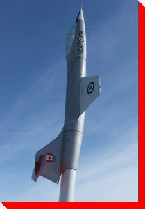

|
LARGE CANADIAN ROADSIDE ATTRACTIONS
PLANES
ON PEDESTALS
|
|


CF-104
"Starfighter"
Innisfail, Alberta
Location: Royal Canadian Legion Branch #104
Manufacturer and
Model: Canadair (Lockheed) F-104 Starfighter
Credit: Bill Dennis

Planes on Pedestals
Main
| By Location | By Type | Wanted Photos of Planes
Large Canadian Roadside Attractions
Copyright
© 2007 Ed Solonyka